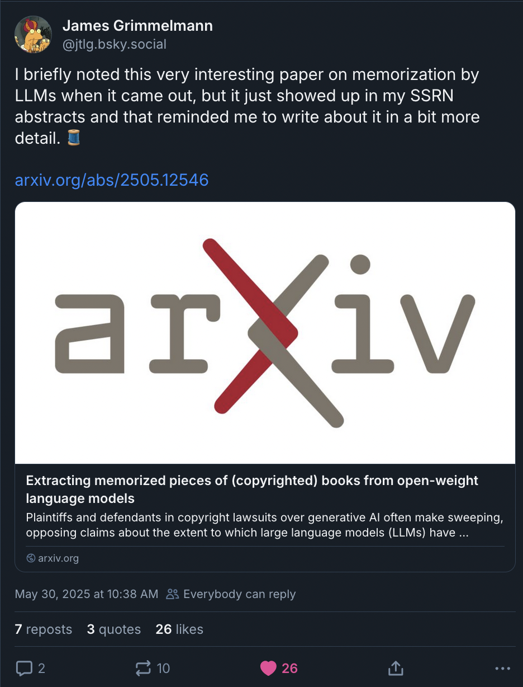
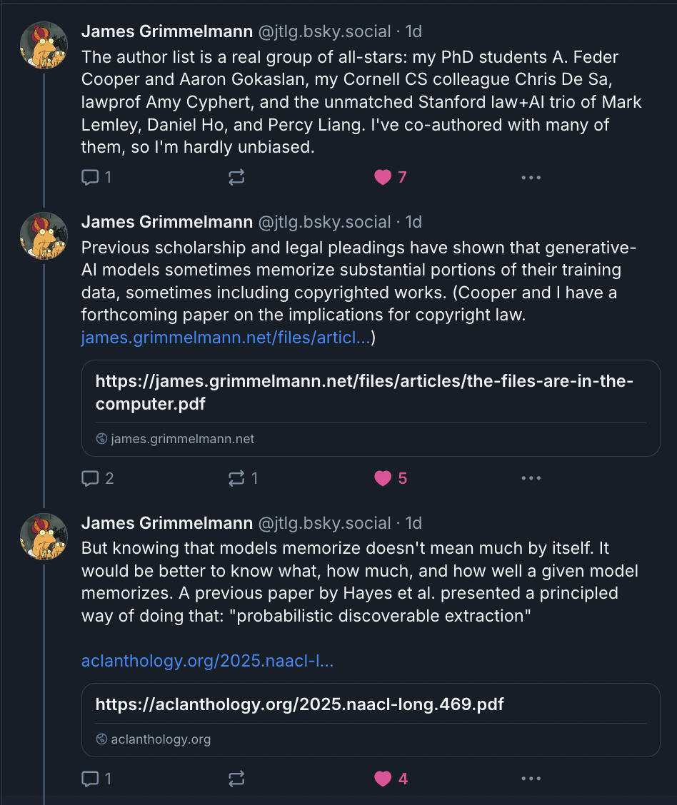
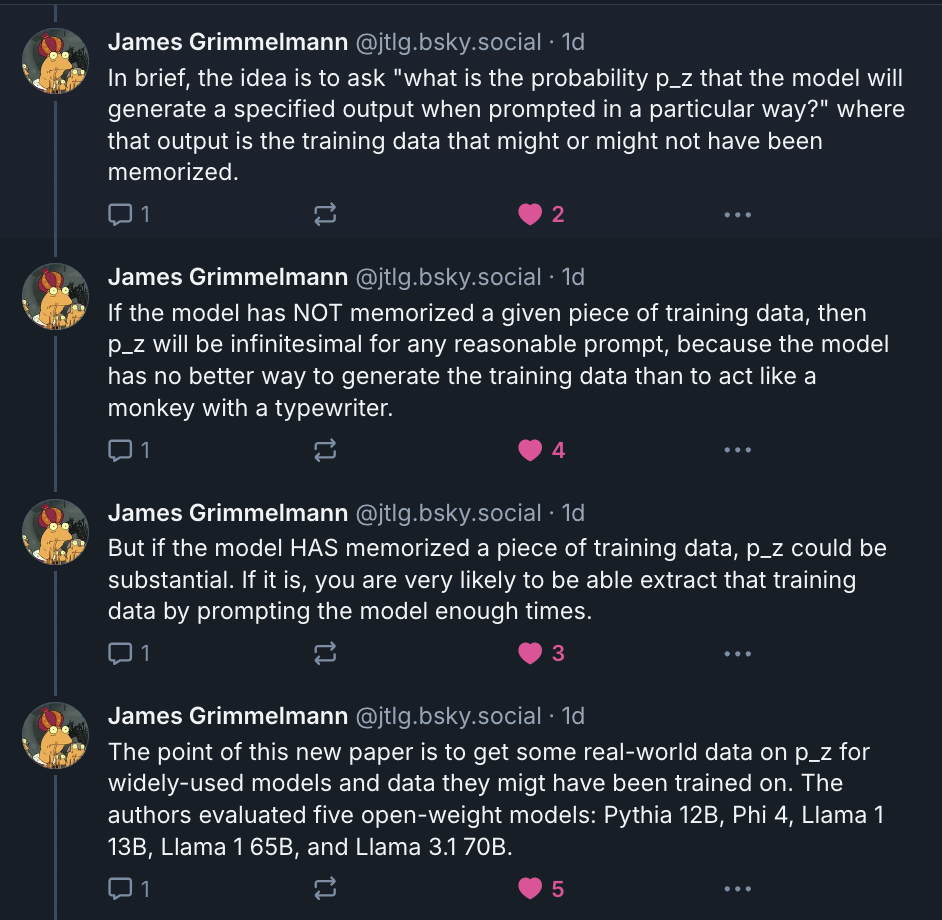
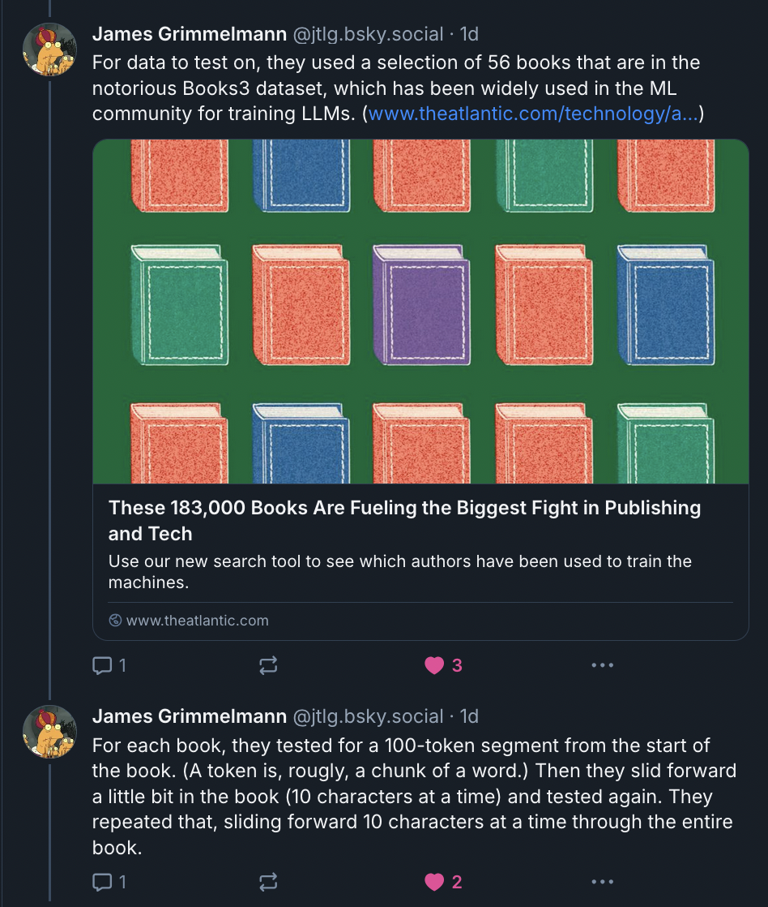
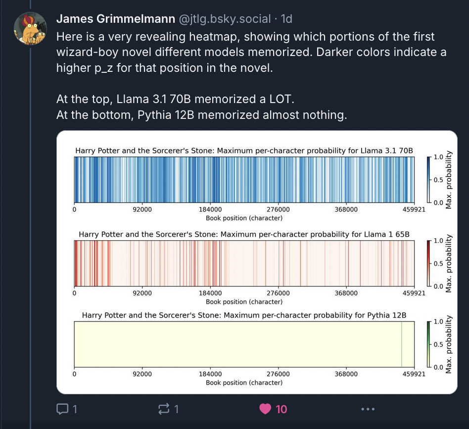
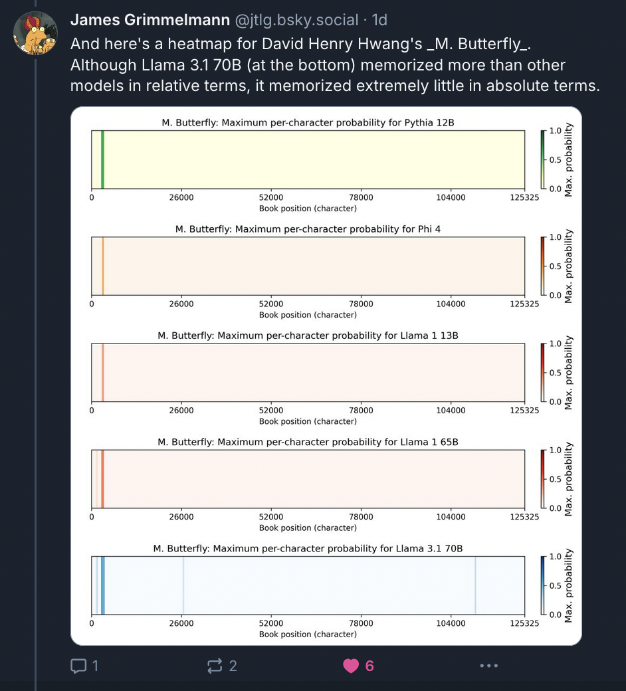
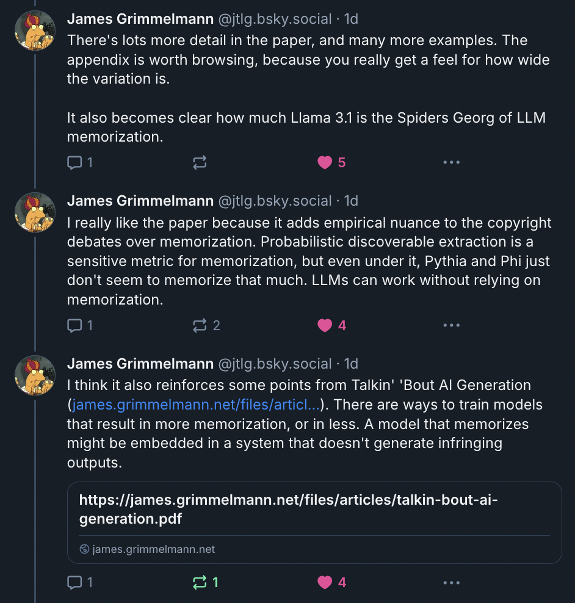
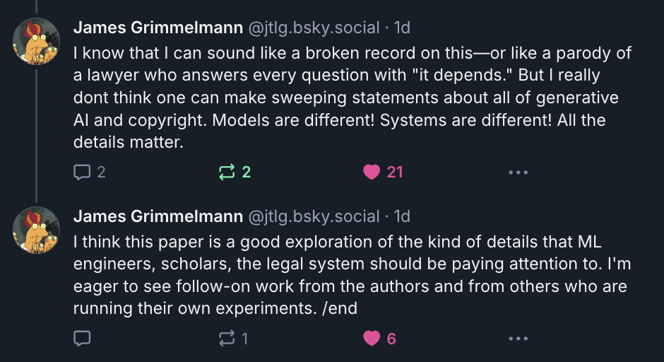

Intro
Memorization, extraction, regurgitation, language models. All over the place. Topic studied for a while in machine learning (ML) security research, much of which originated from Google DeepMind (cites). The latter case because not just of research interest in ML community, poses all sorts of interesting but of increasing interest to general public because of ongoing debates about privacy, intellectual property, and more. (cites) These words, originate from scientific context, take on new lives/ meanings and relevance in these broader conceptual debates. Actual measurements that take to reflect these concepts sometimes get lost in the mix, misunderstood. Have written about this a lot with respect to memorization, most recently in work led by my colleagues at Microsoft (cite).
All of that work is research papers, which are either published or in peer review at law journals and ML conference venues. It's also all pretty long. (And perhaps a bit long-winded, for those who don't spend their time reading this type of stuff for their day job.) So I'm going to try to do something a little different here. I'm going to aim for a concise and high-level description of what we're talking about when we say "memorization" and "extraction" in the context of LLMs, which which also hopefully be helpful and interesting for a more general audience.1
I'm going to cover two different topics.
- The first has to do with "memorization" and "extraction" in language models, which in the last few years have come up in a variety contexts outside of ML, like privacy and copyright. I'll talk about technical (not broader) aspects of these terms at a high level, but will draw from very detailed work A. Feder Cooper* and James Grimmelmann*. "The Files are in the Computer: On Copyright, Memorization, and Generative AI." Forthcoming, Chicago-Kent Law Review, 2025. with James Grimmelmann, and some recent research Hanna Wallach, Meera Desai, A Feder Cooper, Angelina Wang, Chad Atalla, Solon Barocas, Su Lin Blodgett, Alexandra Chouldechova, Emily Corvi, P Alex Dow, Jean Garcia-Gathright, Alexandra Olteanu, Nicholas Pangakis, Stefanie Reed, Emily Sheng, Dan Vann, Jennifer Wortman Vaughan, Matthew Vogel, Hannah Washington, and Abigail Z Jacobs. "Position: Evaluating Generative AI Systems is a Social Science Measurement Challenge." ICML 2025. on measurement and the social sciences led by Hanna Wallach at Microsoft Research. My hope is that disentangling some of the details is useful for those that want to understand memorization and extraction a bit better, in terms of the technical details they involve.
- If that's all you're interested in, no need to keep reading after Part I. But I really hope you stick around, because Part II builds on this background to describe a recent paper Jamie Hayes*, Marika Swanberg*, Harsh Chaudhari, Itay Yona, Ilia Shumailov, Milad Nasr, Christopher A. Choquette-Choo, Katherine Lee, and A. Feder Cooper*. "Measuring memorization in language models via probabilistic extraction." NAACL 2025. with my collaborators at Google DeepMind led by Jamie Hayes. I think this paper is really important, and represents a huge advance (relying on a—I think elegantly—simple shift in thinking) in memorization science for LLMs. We describe a new measurement technique that, using tools from probability and statistics, takes a probabilistic perspective on extraction and memorization. And while this might sound complicated, in practice, it relies on math that many high school students should be familiar with. We need to multiply some numbers2 together to get these measurements. The explanation for why we are multiplying numbers together (and which specific numbers we're multiplying) is the harder, conceptual part. So I'll spend some time explaining this, but ultimately the math itself is very simple.
I'm going to hold off on writing a detailed Part III for now. But a potential future Part III (or separate post) would discuss how the metric we developed in Hayes et al. (2025a) Jamie Hayes*, Marika Swanberg*, Harsh Chaudhari, Itay Yona, Ilia Shumailov, Milad Nasr, Christopher A. Choquette-Choo, Katherine Lee, and A. Feder Cooper*. "Measuring memorization in language models via probabilistic extraction." NAACL 2025. made it possible to finish our study A. Feder Cooper, Aaron Gokaslan, Amy B. Cyphert, Christopher De Sa, Mark A. Lemley, Daniel E. Ho, and Percy Liang. "Extracting memorized pieces of (copyrighted) books from open-weight language models." 2025. that (begins to quantify) memorization of books in popular open-weight models. Talking about these results would make this post far too long (and wide), so for now, Part III will defer to the extremely clear and concise Bluesky thread that James wrote about this work.
Overall, this blog post goes into the technical details of probabilistic extraction, but at a slower clip than either of these two ML extraction papers. The main point of Part I and Part II is to summarize the novel work on probabilistic extraction from Hayes et al. (2025a) Jamie Hayes*, Marika Swanberg*, Harsh Chaudhari, Itay Yona, Ilia Shumailov, Milad Nasr, Christopher A. Choquette-Choo, Katherine Lee, and A. Feder Cooper*. "Measuring memorization in language models via probabilistic extraction." NAACL 2025. . For those interested in the books paper A. Feder Cooper, Aaron Gokaslan, Amy B. Cyphert, Christopher De Sa, Mark A. Lemley, Daniel E. Ho, and Percy Liang. "Extracting memorized pieces of (copyrighted) books from open-weight language models." 2025. briefly mentioned in Part III, Parts I and II are a (friendlier, general-audience) stand-in for Section 2 and parts of Section 3 in that paper.
Part I: What is memorization? What is extraction? Are they the same thing?
What is generation?
So that's generation. How is this different from extraction?
What does extraction have to do with this other thing called memorization?
Can all memorized training data be extracted?
Is it possible to generate (near-exact) copies of training data without those data being memorized?
Part II: How can thinking about extraction probabilities help us make more nuanced observations about extraction and memorization?
What exactly do we mean by "extraction probability"?
How do we compute the extraction probability for a particular piece of text?
What is a "high" extraction probability?
(Non-existent) Part III: Probabilistic extraction, memorization, and books
In a recently completed paper A. Feder Cooper, Aaron Gokaslan, Amy B. Cyphert, Christopher De Sa, Mark A. Lemley, Daniel E. Ho, and Percy Liang. "Extracting memorized pieces of (copyrighted) books from open-weight language models." 2025. , my colleagues and I applied this probabilistic perspective on extraction and memorization to books and popular open-weight LLMs. I'm not going to get into the details here, because this post is just meant to untangle some key concepts and metrics in memorization science. There's a lot more to say about that project that extends beyond the science to potential broader implications. For a summary, I'll refer to an excellent thread (screenshots below) that my frequent collaborator, James Grimmelmann, wrote on Bluesky. He nails both the big picture and (a selection of) the low-level details, which (in my biased opinion) show why this work is interesting and important.








Closing thoughts
There's a ton more work to do on probabilistic extraction and what it means for memorization.
Open questions and future work Possibly seriously undercounting memorization. Verbatim / exact. No typos, alternate spellings (American vs. British English, in case of HP), misplaced commas, etc. Future work, look into this more, how to set this threshold more precisely.
Measurement stream out out of Microsoft Research, how instantiate metric in practice (i.e., operationalize it), measurement instrument and apply. Cite Wallach et al. How can use these measurements to make reliable and valid claims about generative AI models, systems, and their outputs. A ton more work to do here.
Some more personal closing thoughts
So those are the research-y closing thoughts. I'm going to indulge myself in some personal ones (which are really just for me, so please feel free to stop reading.) Since I didn't get to wrap up this work before publishing my dissertation, I couldn't write then about how it all fits together. And with the completion of Hayes et al. (2025a) Jamie Hayes*, Marika Swanberg*, Harsh Chaudhari, Itay Yona, Ilia Shumailov, Milad Nasr, Christopher A. Choquette-Choo, Katherine Lee, and A. Feder Cooper*. "Measuring memorization in language models via probabilistic extraction." NAACL 2025. and Cooper et al. (2025) A. Feder Cooper, Aaron Gokaslan, Amy B. Cyphert, Christopher De Sa, Mark A. Lemley, Daniel E. Ho, and Percy Liang. "Extracting memorized pieces of (copyrighted) books from open-weight language models." 2025. , I (almost) feel like I've finally finished my Ph.D., so I'm going to write a little about it now.
My contributions to Hayes et al. (2025a) Jamie Hayes*, Marika Swanberg*, Harsh Chaudhari, Itay Yona, Ilia Shumailov, Milad Nasr, Christopher A. Choquette-Choo, Katherine Lee, and A. Feder Cooper*. "Measuring memorization in language models via probabilistic extraction." NAACL 2025. and the books project A. Feder Cooper, Aaron Gokaslan, Amy B. Cyphert, Christopher De Sa, Mark A. Lemley, Daniel E. Ho, and Percy Liang. "Extracting memorized pieces of (copyrighted) books from open-weight language models." 2025. both started in spring 2024 with my wonderful Ph.D. committee member, James Grimmelmann. During my academic job search, we wrote a paper (that was supposed to be very short) called The Files Are in the Computer A. Feder Cooper* and James Grimmelmann*. "The Files are in the Computer: On Copyright, Memorization, and Generative AI." Forthcoming, Chicago-Kent Law Review, 2025. . That paper is about how memorized training data are copied inside the model. (It was really cool to see Files mentioned in the recent pre-publication version of Part 3 of the United States Copyright Office's report United States Copyright Office. "Copyright And Artificial Intelligence — Part 3: Generative AI Training (A Report of the Register of Copyrights, pre-publication version." May 2025. on Copyright and Artificial Intelligence.) Files was a follow-on to our paper Talkin' 'Bout AI Generation: Copyright and the Generative-AI Supply Chain Katherine Lee*, A. Feder Cooper*, and James Grimmelmann*. "Talkin' 'Bout AI Generation: Copyright and the Generative-AI Supply Chain." Forthcoming, Journal of the Copyright Society, 2025. , which we wrote with Katherine Lee starting in late 2022, and the report A. Feder Cooper*, Katherine Lee*, James Grimmelmann*, Daphne Ippolito*, Christopher Callison-Burch, Christopher A. Choquette-Choo, Niloofar Mireshghallah, Miles Brundage, David Mimno, Madiha Zahrah Choksi, Jack M. Balkin, Nicholas Carlini, Christopher De Sa, Jonathan Frankle, Deep Ganguli, Bryant Gipson, Andres Guadamuz, Swee Leng Harris, Abigail Z. Jacobs, Elizabeth Joh, Gautam Kamath, Mark Lemley, Cass Matthews, Christine McLeavey, Corynne McSherry, Milad Nasr, Paul Ohm, Adam Roberts, Tom Rubin, Pamela Samuelson, Ludwig Schubert, Kristen Vaccaro, Luis Villa, Felix Wu, and Elana Zeide. "Report of the 1st Workshop on Generative AI and Law." 2023. we wrote together with the participants in the 1st Workshop on Generative AI and Law at ICML 2023.
While writing Files A. Feder Cooper* and James Grimmelmann*. "The Files are in the Computer: On Copyright, Memorization, and Generative AI." Forthcoming, Chicago-Kent Law Review, 2025. with James, I realized that probabilistic extraction could be a more nuanced way to quantify memorization. Over a year ago (an eon in ML time spans), we wrote about this in Part II.D in that paper, and I started working on the ML side of things with books text. It turned out that some of my colleagues at Google DeepMind (led by the amazing security researcher, Jamie Hayes) were also thinking about probabilistic extraction, and were much farther along than me. I'm really grateful that they invited me to join the project, and that I now got to finish up how I started with books.